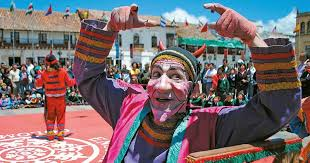
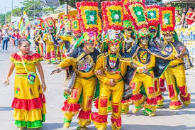

 El festival se celebra entre la última semana de agosto y la primera de septiembre. Este evento ha sido uno de los más trascendentes en la cultura colombiana, ya que abarca encuentros como el “Zoom Festival de Cine de Tunja”, el “Encuentro Nacional Indígena”, la “Bienal de Artesanías de Colombia”, entre otros.Este evento se viene realizando desde 1973, cuando el jefe de Relaciones Públicas de la Industria Licorera de Boyacá, empezó con este proyecto, reuniendo la participación de artistas nacionales e internacionales y con el apoyo del Instituto de Cultura y Bellas Artes de Boyacá.Son diversas exposiciones las que se realizan en este festival. Demostraciones de arte, cine, teatro y conciertos de rock, jazz, bolero y tango, están presentes en esta época del año.
 Este carnaval está declarado por la Unesco como Obra maestra del Patrimonio Oral e Intangible de la Humanidad. Se celebra cada año en los días previos del Miércoles de Ceniza (típica costumbre católica). Éste nace gracias a la incorporación de costumbres y distintas sociedades en la cultura de la ciudad, convirtiéndose en una expresión de la identidad mezclada de los barranquilleros y una convivencia de la tradición rural (campesina, indígena y africana) y la urbana, llegada de otros continentes.Es un tesoro cultural que congrega culturas africanas, indígenas y europeas (España), donde se pueden apreciar muestras de danzas como el mapalé, la cumbia y el garabato; danza que expresa la rivalidad entre la vida y la muerte. La alegría de sus habitantes se muestra en este carnaval en la pasión por la música, la danza y la creatividad.La apertura se realiza con la Noche de Orquestas, en la cual muchas agrupaciones musicales compiten en una noche llena de folclor, gaitas y tambores.